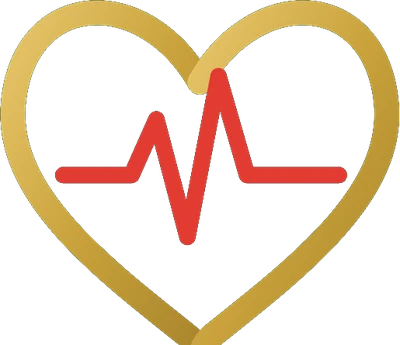
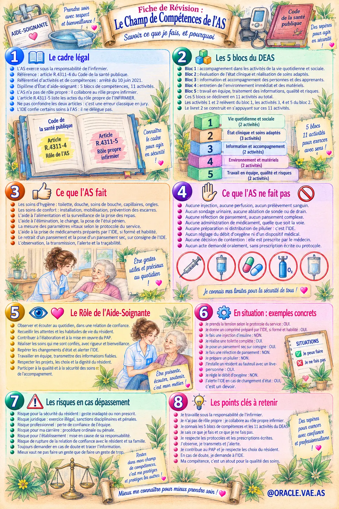
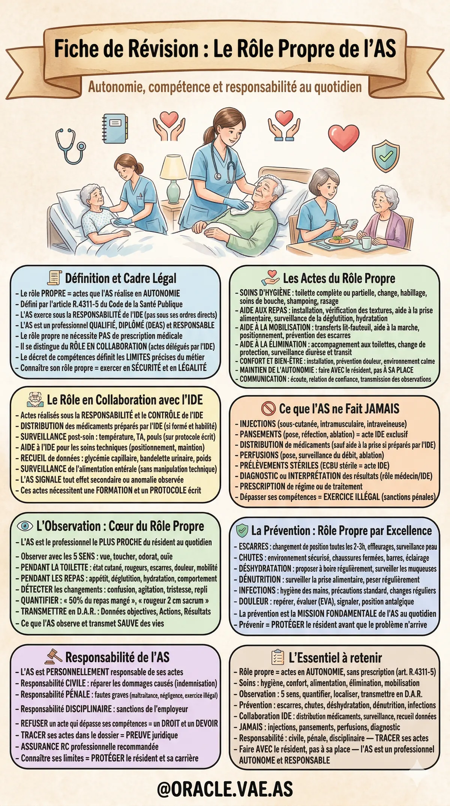

ORACLE VAE ASComprendre exactement ce que fait un aide-soignant — et ce qu'il ne fait pas. La base de tout votre Livret 2.
Distinguer R.4311-4 (champ de l'AS) et R.4311-5 (rôle propre infirmier) — l'erreur classique en jury.
Savoir ce que l'AS fait, ne fait pas, et ce qu'il fait en collaboration avec l'IDE.
Connaître les risques civil, pénal et disciplinaire si vous sortez de votre champ.

Cette fiche condense le champ de compétence de l'AS en 8 blocs numérotés. C'est la matière des 8 chapitres suivants.
Au cœur du métier : accompagner la vie quotidienne du résident, préserver son autonomie
Observer, mesurer, participer aux soins — en collaboration avec l'IDE
Communiquer, informer, former — la relation triangulaire résident/famille/équipe
Hygiène des locaux, bionettoyage, prévention des infections associées aux soins
Transmissions, inventaire, démarche qualité — le volet transversal

L'AS est le professionnel le plus proche du résident au quotidien. Observer avec les 5 sens pendant la toilette, les repas, détecter les changements, quantifier, transmettre en DAR.
Escarres (changement de position toutes les 2-3h), chutes (environnement sécurisé), déshydratation (proposer à boire régulièrement), dénutrition, infections (hygiène des mains).
Maintenir l'autonomie du résident, respecter ses choix, ses habitudes, sa dignité. C'est la différence entre un soignant et un exécutant.
Fautes graves : maltraitance, négligence, exercice illégal de la profession IDE.
Obligation de réparer les dommages causés au résident ou à l'établissement (indemnisation).
Sanctions de l'employeur : avertissement, mise à pied, licenciement pour faute grave.
« Je ne fais pas cette injection, ce n'est pas dans mon rôle. Appelez l'IDE de garde. » — Cette phrase vous protège vous, votre résident, et votre carrière.
Je travaille sous la responsabilité de l'infirmier, pas sous ses ordres directs
Je n'ai pas de rôle propre : je collabore au rôle propre infirmier (art. R.4311-5)
Je connais les 5 blocs de compétences et les 11 activités du DEAS
Je sais ce que je fais : hygiène, confort, alimentation, élimination, mobilisation
Je sais ce que je ne fais JAMAIS : injections, pansements complexes, perfusions, diagnostic
Je respecte les protocoles et les prescriptions écrites
J'observe avec mes 5 sens, je transmets en DAR, j'alerte en cas de doute
Je contribue au PAP et je respecte les choix du résident (faire AVEC)
En cas de doute, je demande à l'IDE et je trace
Ma compétence, c'est un atout pour la qualité des soins et pour ma protection
Vous savez maintenant ce qu'est votre rôle propre, ce que vous faites, ce que vous ne faites jamais, et pourquoi.
Prochaine étape : transformer tout cela en situation professionnelle écrite qui prouve au jury que vous êtes AS.